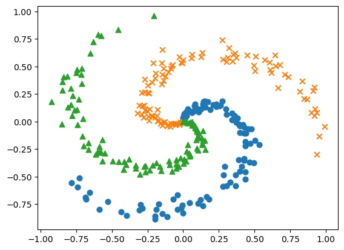
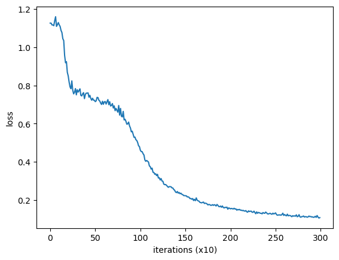
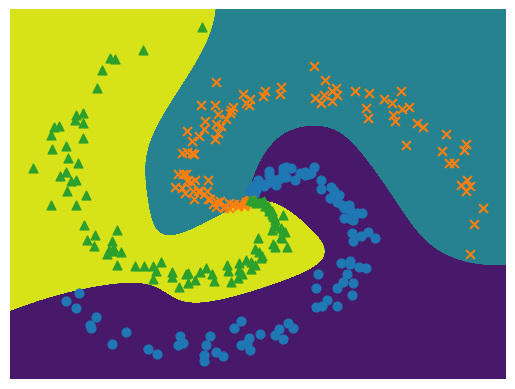
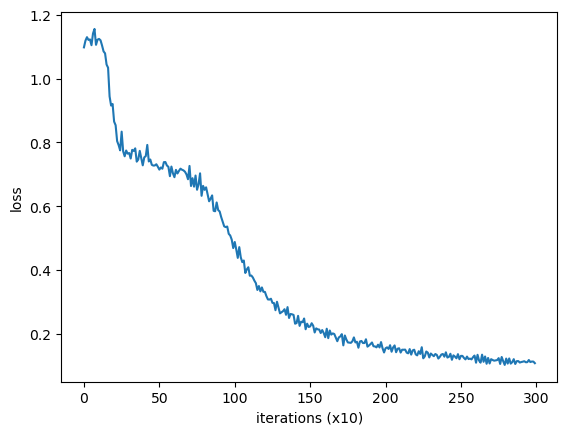

DL-深度学习进阶-自然语言处理-1-神经网络的复习
目录
1.4 使用神经网络解决问题
1.4.1 螺旋状数据集
|
x (300, 2)
t (300, 3)
|

1.4.2 神经网络的实现
|
1.4.3 学习用的代码
|
| epoch 1 | iter 10 / 10 | loss 1.13
| epoch 2 | iter 10 / 10 | loss 1.13
| epoch 3 | iter 10 / 10 | loss 1.12
| epoch 4 | iter 10 / 10 | loss 1.12
| epoch 5 | iter 10 / 10 | loss 1.11
| epoch 6 | iter 10 / 10 | loss 1.14
| epoch 7 | iter 10 / 10 | loss 1.16
| epoch 8 | iter 10 / 10 | loss 1.11
| epoch 9 | iter 10 / 10 | loss 1.12
| epoch 10 | iter 10 / 10 | loss 1.13
| epoch 11 | iter 10 / 10 | loss 1.12
| epoch 12 | iter 10 / 10 | loss 1.11
| epoch 13 | iter 10 / 10 | loss 1.09
| epoch 14 | iter 10 / 10 | loss 1.08
| epoch 15 | iter 10 / 10 | loss 1.04
| epoch 16 | iter 10 / 10 | loss 1.03
| epoch 17 | iter 10 / 10 | loss 0.96
| epoch 18 | iter 10 / 10 | loss 0.92
| epoch 19 | iter 10 / 10 | loss 0.92
| epoch 20 | iter 10 / 10 | loss 0.87
| epoch 21 | iter 10 / 10 | loss 0.85
| epoch 22 | iter 10 / 10 | loss 0.82
| epoch 23 | iter 10 / 10 | loss 0.79
| epoch 24 | iter 10 / 10 | loss 0.78
| epoch 25 | iter 10 / 10 | loss 0.82
| epoch 26 | iter 10 / 10 | loss 0.78
| epoch 27 | iter 10 / 10 | loss 0.76
| epoch 28 | iter 10 / 10 | loss 0.76
| epoch 29 | iter 10 / 10 | loss 0.78
| epoch 30 | iter 10 / 10 | loss 0.75
| epoch 31 | iter 10 / 10 | loss 0.78
| epoch 32 | iter 10 / 10 | loss 0.77
| epoch 33 | iter 10 / 10 | loss 0.77
| epoch 34 | iter 10 / 10 | loss 0.78
| epoch 35 | iter 10 / 10 | loss 0.75
| epoch 36 | iter 10 / 10 | loss 0.74
| epoch 37 | iter 10 / 10 | loss 0.76
| epoch 38 | iter 10 / 10 | loss 0.76
| epoch 39 | iter 10 / 10 | loss 0.73
| epoch 40 | iter 10 / 10 | loss 0.75
| epoch 41 | iter 10 / 10 | loss 0.76
| epoch 42 | iter 10 / 10 | loss 0.76
| epoch 43 | iter 10 / 10 | loss 0.76
| epoch 44 | iter 10 / 10 | loss 0.74
| epoch 45 | iter 10 / 10 | loss 0.75
| epoch 46 | iter 10 / 10 | loss 0.73
| epoch 47 | iter 10 / 10 | loss 0.72
| epoch 48 | iter 10 / 10 | loss 0.73
| epoch 49 | iter 10 / 10 | loss 0.72
| epoch 50 | iter 10 / 10 | loss 0.72
| epoch 51 | iter 10 / 10 | loss 0.72
| epoch 52 | iter 10 / 10 | loss 0.72
| epoch 53 | iter 10 / 10 | loss 0.74
| epoch 54 | iter 10 / 10 | loss 0.74
| epoch 55 | iter 10 / 10 | loss 0.72
| epoch 56 | iter 10 / 10 | loss 0.72
| epoch 57 | iter 10 / 10 | loss 0.71
| epoch 58 | iter 10 / 10 | loss 0.70
| epoch 59 | iter 10 / 10 | loss 0.72
| epoch 60 | iter 10 / 10 | loss 0.70
| epoch 61 | iter 10 / 10 | loss 0.71
| epoch 62 | iter 10 / 10 | loss 0.72
| epoch 63 | iter 10 / 10 | loss 0.70
| epoch 64 | iter 10 / 10 | loss 0.71
| epoch 65 | iter 10 / 10 | loss 0.73
| epoch 66 | iter 10 / 10 | loss 0.70
| epoch 67 | iter 10 / 10 | loss 0.71
| epoch 68 | iter 10 / 10 | loss 0.69
| epoch 69 | iter 10 / 10 | loss 0.70
| epoch 70 | iter 10 / 10 | loss 0.71
| epoch 71 | iter 10 / 10 | loss 0.68
| epoch 72 | iter 10 / 10 | loss 0.69
| epoch 73 | iter 10 / 10 | loss 0.67
| epoch 74 | iter 10 / 10 | loss 0.68
| epoch 75 | iter 10 / 10 | loss 0.67
| epoch 76 | iter 10 / 10 | loss 0.66
| epoch 77 | iter 10 / 10 | loss 0.69
| epoch 78 | iter 10 / 10 | loss 0.64
| epoch 79 | iter 10 / 10 | loss 0.68
| epoch 80 | iter 10 / 10 | loss 0.64
| epoch 81 | iter 10 / 10 | loss 0.64
| epoch 82 | iter 10 / 10 | loss 0.66
| epoch 83 | iter 10 / 10 | loss 0.62
| epoch 84 | iter 10 / 10 | loss 0.62
| epoch 85 | iter 10 / 10 | loss 0.61
| epoch 86 | iter 10 / 10 | loss 0.60
| epoch 87 | iter 10 / 10 | loss 0.60
| epoch 88 | iter 10 / 10 | loss 0.61
| epoch 89 | iter 10 / 10 | loss 0.59
| epoch 90 | iter 10 / 10 | loss 0.58
| epoch 91 | iter 10 / 10 | loss 0.56
| epoch 92 | iter 10 / 10 | loss 0.56
| epoch 93 | iter 10 / 10 | loss 0.54
| epoch 94 | iter 10 / 10 | loss 0.53
| epoch 95 | iter 10 / 10 | loss 0.53
| epoch 96 | iter 10 / 10 | loss 0.52
| epoch 97 | iter 10 / 10 | loss 0.51
| epoch 98 | iter 10 / 10 | loss 0.50
| epoch 99 | iter 10 / 10 | loss 0.48
| epoch 100 | iter 10 / 10 | loss 0.48
| epoch 101 | iter 10 / 10 | loss 0.46
| epoch 102 | iter 10 / 10 | loss 0.45
| epoch 103 | iter 10 / 10 | loss 0.45
| epoch 104 | iter 10 / 10 | loss 0.44
| epoch 105 | iter 10 / 10 | loss 0.44
| epoch 106 | iter 10 / 10 | loss 0.41
| epoch 107 | iter 10 / 10 | loss 0.40
| epoch 108 | iter 10 / 10 | loss 0.41
| epoch 109 | iter 10 / 10 | loss 0.40
| epoch 110 | iter 10 / 10 | loss 0.40
| epoch 111 | iter 10 / 10 | loss 0.38
| epoch 112 | iter 10 / 10 | loss 0.38
| epoch 113 | iter 10 / 10 | loss 0.36
| epoch 114 | iter 10 / 10 | loss 0.37
| epoch 115 | iter 10 / 10 | loss 0.35
| epoch 116 | iter 10 / 10 | loss 0.34
| epoch 117 | iter 10 / 10 | loss 0.34
| epoch 118 | iter 10 / 10 | loss 0.34
| epoch 119 | iter 10 / 10 | loss 0.33
| epoch 120 | iter 10 / 10 | loss 0.34
| epoch 121 | iter 10 / 10 | loss 0.32
| epoch 122 | iter 10 / 10 | loss 0.32
| epoch 123 | iter 10 / 10 | loss 0.31
| epoch 124 | iter 10 / 10 | loss 0.31
| epoch 125 | iter 10 / 10 | loss 0.30
| epoch 126 | iter 10 / 10 | loss 0.30
| epoch 127 | iter 10 / 10 | loss 0.28
| epoch 128 | iter 10 / 10 | loss 0.28
| epoch 129 | iter 10 / 10 | loss 0.28
| epoch 130 | iter 10 / 10 | loss 0.28
| epoch 131 | iter 10 / 10 | loss 0.27
| epoch 132 | iter 10 / 10 | loss 0.27
| epoch 133 | iter 10 / 10 | loss 0.27
| epoch 134 | iter 10 / 10 | loss 0.27
| epoch 135 | iter 10 / 10 | loss 0.27
| epoch 136 | iter 10 / 10 | loss 0.26
| epoch 137 | iter 10 / 10 | loss 0.26
| epoch 138 | iter 10 / 10 | loss 0.26
| epoch 139 | iter 10 / 10 | loss 0.25
| epoch 140 | iter 10 / 10 | loss 0.24
| epoch 141 | iter 10 / 10 | loss 0.24
| epoch 142 | iter 10 / 10 | loss 0.25
| epoch 143 | iter 10 / 10 | loss 0.24
| epoch 144 | iter 10 / 10 | loss 0.24
| epoch 145 | iter 10 / 10 | loss 0.23
| epoch 146 | iter 10 / 10 | loss 0.24
| epoch 147 | iter 10 / 10 | loss 0.23
| epoch 148 | iter 10 / 10 | loss 0.23
| epoch 149 | iter 10 / 10 | loss 0.22
| epoch 150 | iter 10 / 10 | loss 0.22
| epoch 151 | iter 10 / 10 | loss 0.22
| epoch 152 | iter 10 / 10 | loss 0.22
| epoch 153 | iter 10 / 10 | loss 0.22
| epoch 154 | iter 10 / 10 | loss 0.22
| epoch 155 | iter 10 / 10 | loss 0.22
| epoch 156 | iter 10 / 10 | loss 0.21
| epoch 157 | iter 10 / 10 | loss 0.21
| epoch 158 | iter 10 / 10 | loss 0.20
| epoch 159 | iter 10 / 10 | loss 0.21
| epoch 160 | iter 10 / 10 | loss 0.20
| epoch 161 | iter 10 / 10 | loss 0.20
| epoch 162 | iter 10 / 10 | loss 0.20
| epoch 163 | iter 10 / 10 | loss 0.21
| epoch 164 | iter 10 / 10 | loss 0.20
| epoch 165 | iter 10 / 10 | loss 0.20
| epoch 166 | iter 10 / 10 | loss 0.19
| epoch 167 | iter 10 / 10 | loss 0.19
| epoch 168 | iter 10 / 10 | loss 0.19
| epoch 169 | iter 10 / 10 | loss 0.19
| epoch 170 | iter 10 / 10 | loss 0.19
| epoch 171 | iter 10 / 10 | loss 0.19
| epoch 172 | iter 10 / 10 | loss 0.18
| epoch 173 | iter 10 / 10 | loss 0.18
| epoch 174 | iter 10 / 10 | loss 0.18
| epoch 175 | iter 10 / 10 | loss 0.18
| epoch 176 | iter 10 / 10 | loss 0.18
| epoch 177 | iter 10 / 10 | loss 0.18
| epoch 178 | iter 10 / 10 | loss 0.18
| epoch 179 | iter 10 / 10 | loss 0.17
| epoch 180 | iter 10 / 10 | loss 0.17
| epoch 181 | iter 10 / 10 | loss 0.18
| epoch 182 | iter 10 / 10 | loss 0.17
| epoch 183 | iter 10 / 10 | loss 0.18
| epoch 184 | iter 10 / 10 | loss 0.17
| epoch 185 | iter 10 / 10 | loss 0.17
| epoch 186 | iter 10 / 10 | loss 0.18
| epoch 187 | iter 10 / 10 | loss 0.17
| epoch 188 | iter 10 / 10 | loss 0.17
| epoch 189 | iter 10 / 10 | loss 0.17
| epoch 190 | iter 10 / 10 | loss 0.17
| epoch 191 | iter 10 / 10 | loss 0.16
| epoch 192 | iter 10 / 10 | loss 0.17
| epoch 193 | iter 10 / 10 | loss 0.16
| epoch 194 | iter 10 / 10 | loss 0.16
| epoch 195 | iter 10 / 10 | loss 0.16
| epoch 196 | iter 10 / 10 | loss 0.16
| epoch 197 | iter 10 / 10 | loss 0.16
| epoch 198 | iter 10 / 10 | loss 0.15
| epoch 199 | iter 10 / 10 | loss 0.16
| epoch 200 | iter 10 / 10 | loss 0.16
| epoch 201 | iter 10 / 10 | loss 0.15
| epoch 202 | iter 10 / 10 | loss 0.16
| epoch 203 | iter 10 / 10 | loss 0.16
| epoch 204 | iter 10 / 10 | loss 0.15
| epoch 205 | iter 10 / 10 | loss 0.16
| epoch 206 | iter 10 / 10 | loss 0.15
| epoch 207 | iter 10 / 10 | loss 0.15
| epoch 208 | iter 10 / 10 | loss 0.15
| epoch 209 | iter 10 / 10 | loss 0.15
| epoch 210 | iter 10 / 10 | loss 0.15
| epoch 211 | iter 10 / 10 | loss 0.15
| epoch 212 | iter 10 / 10 | loss 0.15
| epoch 213 | iter 10 / 10 | loss 0.15
| epoch 214 | iter 10 / 10 | loss 0.15
| epoch 215 | iter 10 / 10 | loss 0.15
| epoch 216 | iter 10 / 10 | loss 0.14
| epoch 217 | iter 10 / 10 | loss 0.14
| epoch 218 | iter 10 / 10 | loss 0.15
| epoch 219 | iter 10 / 10 | loss 0.14
| epoch 220 | iter 10 / 10 | loss 0.14
| epoch 221 | iter 10 / 10 | loss 0.14
| epoch 222 | iter 10 / 10 | loss 0.14
| epoch 223 | iter 10 / 10 | loss 0.14
| epoch 224 | iter 10 / 10 | loss 0.14
| epoch 225 | iter 10 / 10 | loss 0.14
| epoch 226 | iter 10 / 10 | loss 0.14
| epoch 227 | iter 10 / 10 | loss 0.14
| epoch 228 | iter 10 / 10 | loss 0.14
| epoch 229 | iter 10 / 10 | loss 0.13
| epoch 230 | iter 10 / 10 | loss 0.14
| epoch 231 | iter 10 / 10 | loss 0.13
| epoch 232 | iter 10 / 10 | loss 0.14
| epoch 233 | iter 10 / 10 | loss 0.13
| epoch 234 | iter 10 / 10 | loss 0.13
| epoch 235 | iter 10 / 10 | loss 0.13
| epoch 236 | iter 10 / 10 | loss 0.13
| epoch 237 | iter 10 / 10 | loss 0.14
| epoch 238 | iter 10 / 10 | loss 0.13
| epoch 239 | iter 10 / 10 | loss 0.13
| epoch 240 | iter 10 / 10 | loss 0.14
| epoch 241 | iter 10 / 10 | loss 0.13
| epoch 242 | iter 10 / 10 | loss 0.13
| epoch 243 | iter 10 / 10 | loss 0.13
| epoch 244 | iter 10 / 10 | loss 0.13
| epoch 245 | iter 10 / 10 | loss 0.13
| epoch 246 | iter 10 / 10 | loss 0.13
| epoch 247 | iter 10 / 10 | loss 0.13
| epoch 248 | iter 10 / 10 | loss 0.13
| epoch 249 | iter 10 / 10 | loss 0.13
| epoch 250 | iter 10 / 10 | loss 0.13
| epoch 251 | iter 10 / 10 | loss 0.13
| epoch 252 | iter 10 / 10 | loss 0.12
| epoch 253 | iter 10 / 10 | loss 0.12
| epoch 254 | iter 10 / 10 | loss 0.12
| epoch 255 | iter 10 / 10 | loss 0.12
| epoch 256 | iter 10 / 10 | loss 0.12
| epoch 257 | iter 10 / 10 | loss 0.12
| epoch 258 | iter 10 / 10 | loss 0.12
| epoch 259 | iter 10 / 10 | loss 0.13
| epoch 260 | iter 10 / 10 | loss 0.12
| epoch 261 | iter 10 / 10 | loss 0.13
| epoch 262 | iter 10 / 10 | loss 0.12
| epoch 263 | iter 10 / 10 | loss 0.12
| epoch 264 | iter 10 / 10 | loss 0.13
| epoch 265 | iter 10 / 10 | loss 0.12
| epoch 266 | iter 10 / 10 | loss 0.12
| epoch 267 | iter 10 / 10 | loss 0.12
| epoch 268 | iter 10 / 10 | loss 0.12
| epoch 269 | iter 10 / 10 | loss 0.11
| epoch 270 | iter 10 / 10 | loss 0.12
| epoch 271 | iter 10 / 10 | loss 0.12
| epoch 272 | iter 10 / 10 | loss 0.12
| epoch 273 | iter 10 / 10 | loss 0.12
| epoch 274 | iter 10 / 10 | loss 0.12
| epoch 275 | iter 10 / 10 | loss 0.11
| epoch 276 | iter 10 / 10 | loss 0.12
| epoch 277 | iter 10 / 10 | loss 0.12
| epoch 278 | iter 10 / 10 | loss 0.11
| epoch 279 | iter 10 / 10 | loss 0.11
| epoch 280 | iter 10 / 10 | loss 0.11
| epoch 281 | iter 10 / 10 | loss 0.11
| epoch 282 | iter 10 / 10 | loss 0.12
| epoch 283 | iter 10 / 10 | loss 0.11
| epoch 284 | iter 10 / 10 | loss 0.11
| epoch 285 | iter 10 / 10 | loss 0.11
| epoch 286 | iter 10 / 10 | loss 0.11
| epoch 287 | iter 10 / 10 | loss 0.11
| epoch 288 | iter 10 / 10 | loss 0.12
| epoch 289 | iter 10 / 10 | loss 0.11
| epoch 290 | iter 10 / 10 | loss 0.11
| epoch 291 | iter 10 / 10 | loss 0.11
| epoch 292 | iter 10 / 10 | loss 0.11
| epoch 293 | iter 10 / 10 | loss 0.11
| epoch 294 | iter 10 / 10 | loss 0.11
| epoch 295 | iter 10 / 10 | loss 0.12
| epoch 296 | iter 10 / 10 | loss 0.11
| epoch 297 | iter 10 / 10 | loss 0.12
| epoch 298 | iter 10 / 10 | loss 0.11
| epoch 299 | iter 10 / 10 | loss 0.11
| epoch 300 | iter 10 / 10 | loss 0.11
|

|

1.4.4 Trainer 类
将执行神经网络的学习封装成一个类。
|
| epoch 1 | iter 1 / 10 | time 0[s] | loss 1.10
| epoch 2 | iter 1 / 10 | time 0[s] | loss 1.12
| epoch 3 | iter 1 / 10 | time 0[s] | loss 1.13
| epoch 4 | iter 1 / 10 | time 0[s] | loss 1.12
| epoch 5 | iter 1 / 10 | time 0[s] | loss 1.12
| epoch 6 | iter 1 / 10 | time 0[s] | loss 1.10
| epoch 7 | iter 1 / 10 | time 0[s] | loss 1.14
| epoch 8 | iter 1 / 10 | time 0[s] | loss 1.16
| epoch 9 | iter 1 / 10 | time 0[s] | loss 1.11
| epoch 10 | iter 1 / 10 | time 0[s] | loss 1.12
| epoch 11 | iter 1 / 10 | time 0[s] | loss 1.12
| epoch 12 | iter 1 / 10 | time 0[s] | loss 1.12
| epoch 13 | iter 1 / 10 | time 0[s] | loss 1.10
| epoch 14 | iter 1 / 10 | time 0[s] | loss 1.09
| epoch 15 | iter 1 / 10 | time 0[s] | loss 1.08
| epoch 16 | iter 1 / 10 | time 0[s] | loss 1.04
| epoch 17 | iter 1 / 10 | time 0[s] | loss 1.03
| epoch 18 | iter 1 / 10 | time 0[s] | loss 0.94
| epoch 19 | iter 1 / 10 | time 0[s] | loss 0.92
| epoch 20 | iter 1 / 10 | time 0[s] | loss 0.92
| epoch 21 | iter 1 / 10 | time 0[s] | loss 0.87
| epoch 22 | iter 1 / 10 | time 0[s] | loss 0.85
| epoch 23 | iter 1 / 10 | time 0[s] | loss 0.80
| epoch 24 | iter 1 / 10 | time 0[s] | loss 0.79
| epoch 25 | iter 1 / 10 | time 0[s] | loss 0.78
| epoch 26 | iter 1 / 10 | time 0[s] | loss 0.83
| epoch 27 | iter 1 / 10 | time 0[s] | loss 0.77
| epoch 28 | iter 1 / 10 | time 0[s] | loss 0.76
| epoch 29 | iter 1 / 10 | time 0[s] | loss 0.77
| epoch 30 | iter 1 / 10 | time 0[s] | loss 0.76
| epoch 31 | iter 1 / 10 | time 0[s] | loss 0.77
| epoch 32 | iter 1 / 10 | time 0[s] | loss 0.75
| epoch 33 | iter 1 / 10 | time 0[s] | loss 0.78
| epoch 34 | iter 1 / 10 | time 0[s] | loss 0.77
| epoch 35 | iter 1 / 10 | time 0[s] | loss 0.78
| epoch 36 | iter 1 / 10 | time 0[s] | loss 0.74
| epoch 37 | iter 1 / 10 | time 0[s] | loss 0.75
| epoch 38 | iter 1 / 10 | time 0[s] | loss 0.77
| epoch 39 | iter 1 / 10 | time 0[s] | loss 0.75
| epoch 40 | iter 1 / 10 | time 0[s] | loss 0.73
| epoch 41 | iter 1 / 10 | time 0[s] | loss 0.75
| epoch 42 | iter 1 / 10 | time 0[s] | loss 0.76
| epoch 43 | iter 1 / 10 | time 0[s] | loss 0.79
| epoch 44 | iter 1 / 10 | time 0[s] | loss 0.74
| epoch 45 | iter 1 / 10 | time 0[s] | loss 0.75
| epoch 46 | iter 1 / 10 | time 0[s] | loss 0.73
| epoch 47 | iter 1 / 10 | time 0[s] | loss 0.73
| epoch 48 | iter 1 / 10 | time 0[s] | loss 0.73
| epoch 49 | iter 1 / 10 | time 0[s] | loss 0.73
| epoch 50 | iter 1 / 10 | time 0[s] | loss 0.72
| epoch 51 | iter 1 / 10 | time 0[s] | loss 0.72
| epoch 52 | iter 1 / 10 | time 0[s] | loss 0.72
| epoch 53 | iter 1 / 10 | time 0[s] | loss 0.72
| epoch 54 | iter 1 / 10 | time 0[s] | loss 0.74
| epoch 55 | iter 1 / 10 | time 0[s] | loss 0.74
| epoch 56 | iter 1 / 10 | time 0[s] | loss 0.73
| epoch 57 | iter 1 / 10 | time 0[s] | loss 0.72
| epoch 58 | iter 1 / 10 | time 0[s] | loss 0.69
| epoch 59 | iter 1 / 10 | time 0[s] | loss 0.72
| epoch 60 | iter 1 / 10 | time 0[s] | loss 0.70
| epoch 61 | iter 1 / 10 | time 0[s] | loss 0.69
| epoch 62 | iter 1 / 10 | time 0[s] | loss 0.71
| epoch 63 | iter 1 / 10 | time 0[s] | loss 0.70
| epoch 64 | iter 1 / 10 | time 0[s] | loss 0.71
| epoch 65 | iter 1 / 10 | time 0[s] | loss 0.72
| epoch 66 | iter 1 / 10 | time 0[s] | loss 0.71
| epoch 67 | iter 1 / 10 | time 0[s] | loss 0.71
| epoch 68 | iter 1 / 10 | time 0[s] | loss 0.71
| epoch 69 | iter 1 / 10 | time 0[s] | loss 0.70
| epoch 70 | iter 1 / 10 | time 0[s] | loss 0.68
| epoch 71 | iter 1 / 10 | time 0[s] | loss 0.73
| epoch 72 | iter 1 / 10 | time 0[s] | loss 0.66
| epoch 73 | iter 1 / 10 | time 0[s] | loss 0.69
| epoch 74 | iter 1 / 10 | time 0[s] | loss 0.66
| epoch 75 | iter 1 / 10 | time 0[s] | loss 0.70
| epoch 76 | iter 1 / 10 | time 0[s] | loss 0.65
| epoch 77 | iter 1 / 10 | time 0[s] | loss 0.67
| epoch 78 | iter 1 / 10 | time 0[s] | loss 0.70
| epoch 79 | iter 1 / 10 | time 0[s] | loss 0.63
| epoch 80 | iter 1 / 10 | time 0[s] | loss 0.66
| epoch 81 | iter 1 / 10 | time 0[s] | loss 0.65
| epoch 82 | iter 1 / 10 | time 0[s] | loss 0.66
| epoch 83 | iter 1 / 10 | time 0[s] | loss 0.64
| epoch 84 | iter 1 / 10 | time 0[s] | loss 0.62
| epoch 85 | iter 1 / 10 | time 0[s] | loss 0.62
| epoch 86 | iter 1 / 10 | time 0[s] | loss 0.63
| epoch 87 | iter 1 / 10 | time 0[s] | loss 0.59
| epoch 88 | iter 1 / 10 | time 0[s] | loss 0.58
| epoch 89 | iter 1 / 10 | time 0[s] | loss 0.61
| epoch 90 | iter 1 / 10 | time 0[s] | loss 0.59
| epoch 91 | iter 1 / 10 | time 0[s] | loss 0.58
| epoch 92 | iter 1 / 10 | time 0[s] | loss 0.57
| epoch 93 | iter 1 / 10 | time 0[s] | loss 0.55
| epoch 94 | iter 1 / 10 | time 0[s] | loss 0.54
| epoch 95 | iter 1 / 10 | time 0[s] | loss 0.53
| epoch 96 | iter 1 / 10 | time 0[s] | loss 0.54
| epoch 97 | iter 1 / 10 | time 0[s] | loss 0.51
| epoch 98 | iter 1 / 10 | time 0[s] | loss 0.51
| epoch 99 | iter 1 / 10 | time 0[s] | loss 0.50
| epoch 100 | iter 1 / 10 | time 0[s] | loss 0.47
| epoch 101 | iter 1 / 10 | time 0[s] | loss 0.49
| epoch 102 | iter 1 / 10 | time 0[s] | loss 0.46
| epoch 103 | iter 1 / 10 | time 0[s] | loss 0.44
| epoch 104 | iter 1 / 10 | time 0[s] | loss 0.47
| epoch 105 | iter 1 / 10 | time 0[s] | loss 0.44
| epoch 106 | iter 1 / 10 | time 0[s] | loss 0.43
| epoch 107 | iter 1 / 10 | time 0[s] | loss 0.43
| epoch 108 | iter 1 / 10 | time 0[s] | loss 0.39
| epoch 109 | iter 1 / 10 | time 0[s] | loss 0.40
| epoch 110 | iter 1 / 10 | time 0[s] | loss 0.41
| epoch 111 | iter 1 / 10 | time 0[s] | loss 0.38
| epoch 112 | iter 1 / 10 | time 0[s] | loss 0.38
| epoch 113 | iter 1 / 10 | time 0[s] | loss 0.38
| epoch 114 | iter 1 / 10 | time 0[s] | loss 0.37
| epoch 115 | iter 1 / 10 | time 0[s] | loss 0.36
| epoch 116 | iter 1 / 10 | time 0[s] | loss 0.34
| epoch 117 | iter 1 / 10 | time 0[s] | loss 0.35
| epoch 118 | iter 1 / 10 | time 0[s] | loss 0.33
| epoch 119 | iter 1 / 10 | time 0[s] | loss 0.35
| epoch 120 | iter 1 / 10 | time 0[s] | loss 0.33
| epoch 121 | iter 1 / 10 | time 0[s] | loss 0.33
| epoch 122 | iter 1 / 10 | time 0[s] | loss 0.32
| epoch 123 | iter 1 / 10 | time 0[s] | loss 0.31
| epoch 124 | iter 1 / 10 | time 0[s] | loss 0.31
| epoch 125 | iter 1 / 10 | time 0[s] | loss 0.31
| epoch 126 | iter 1 / 10 | time 0[s] | loss 0.30
| epoch 127 | iter 1 / 10 | time 0[s] | loss 0.30
| epoch 128 | iter 1 / 10 | time 0[s] | loss 0.27
| epoch 129 | iter 1 / 10 | time 0[s] | loss 0.30
| epoch 130 | iter 1 / 10 | time 0[s] | loss 0.28
| epoch 131 | iter 1 / 10 | time 0[s] | loss 0.26
| epoch 132 | iter 1 / 10 | time 0[s] | loss 0.27
| epoch 133 | iter 1 / 10 | time 0[s] | loss 0.27
| epoch 134 | iter 1 / 10 | time 0[s] | loss 0.28
| epoch 135 | iter 1 / 10 | time 0[s] | loss 0.26
| epoch 136 | iter 1 / 10 | time 0[s] | loss 0.28
| epoch 137 | iter 1 / 10 | time 0[s] | loss 0.25
| epoch 138 | iter 1 / 10 | time 0[s] | loss 0.26
| epoch 139 | iter 1 / 10 | time 0[s] | loss 0.26
| epoch 140 | iter 1 / 10 | time 0[s] | loss 0.26
| epoch 141 | iter 1 / 10 | time 0[s] | loss 0.23
| epoch 142 | iter 1 / 10 | time 0[s] | loss 0.23
| epoch 143 | iter 1 / 10 | time 0[s] | loss 0.26
| epoch 144 | iter 1 / 10 | time 0[s] | loss 0.23
| epoch 145 | iter 1 / 10 | time 0[s] | loss 0.24
| epoch 146 | iter 1 / 10 | time 0[s] | loss 0.24
| epoch 147 | iter 1 / 10 | time 0[s] | loss 0.25
| epoch 148 | iter 1 / 10 | time 0[s] | loss 0.21
| epoch 149 | iter 1 / 10 | time 0[s] | loss 0.23
| epoch 150 | iter 1 / 10 | time 0[s] | loss 0.22
| epoch 151 | iter 1 / 10 | time 0[s] | loss 0.22
| epoch 152 | iter 1 / 10 | time 0[s] | loss 0.23
| epoch 153 | iter 1 / 10 | time 0[s] | loss 0.23
| epoch 154 | iter 1 / 10 | time 0[s] | loss 0.20
| epoch 155 | iter 1 / 10 | time 0[s] | loss 0.22
| epoch 156 | iter 1 / 10 | time 0[s] | loss 0.21
| epoch 157 | iter 1 / 10 | time 0[s] | loss 0.21
| epoch 158 | iter 1 / 10 | time 0[s] | loss 0.20
| epoch 159 | iter 1 / 10 | time 0[s] | loss 0.21
| epoch 160 | iter 1 / 10 | time 0[s] | loss 0.20
| epoch 161 | iter 1 / 10 | time 0[s] | loss 0.19
| epoch 162 | iter 1 / 10 | time 0[s] | loss 0.22
| epoch 163 | iter 1 / 10 | time 0[s] | loss 0.19
| epoch 164 | iter 1 / 10 | time 0[s] | loss 0.21
| epoch 165 | iter 1 / 10 | time 0[s] | loss 0.20
| epoch 166 | iter 1 / 10 | time 0[s] | loss 0.20
| epoch 167 | iter 1 / 10 | time 0[s] | loss 0.20
| epoch 168 | iter 1 / 10 | time 0[s] | loss 0.19
| epoch 169 | iter 1 / 10 | time 0[s] | loss 0.18
| epoch 170 | iter 1 / 10 | time 0[s] | loss 0.19
| epoch 171 | iter 1 / 10 | time 0[s] | loss 0.19
| epoch 172 | iter 1 / 10 | time 0[s] | loss 0.20
| epoch 173 | iter 1 / 10 | time 0[s] | loss 0.16
| epoch 174 | iter 1 / 10 | time 0[s] | loss 0.20
| epoch 175 | iter 1 / 10 | time 0[s] | loss 0.18
| epoch 176 | iter 1 / 10 | time 0[s] | loss 0.17
| epoch 177 | iter 1 / 10 | time 0[s] | loss 0.17
| epoch 178 | iter 1 / 10 | time 0[s] | loss 0.17
| epoch 179 | iter 1 / 10 | time 0[s] | loss 0.18
| epoch 180 | iter 1 / 10 | time 0[s] | loss 0.19
| epoch 181 | iter 1 / 10 | time 0[s] | loss 0.17
| epoch 182 | iter 1 / 10 | time 0[s] | loss 0.18
| epoch 183 | iter 1 / 10 | time 0[s] | loss 0.16
| epoch 184 | iter 1 / 10 | time 0[s] | loss 0.18
| epoch 185 | iter 1 / 10 | time 0[s] | loss 0.18
| epoch 186 | iter 1 / 10 | time 0[s] | loss 0.17
| epoch 187 | iter 1 / 10 | time 0[s] | loss 0.17
| epoch 188 | iter 1 / 10 | time 0[s] | loss 0.18
| epoch 189 | iter 1 / 10 | time 0[s] | loss 0.16
| epoch 190 | iter 1 / 10 | time 0[s] | loss 0.16
| epoch 191 | iter 1 / 10 | time 0[s] | loss 0.17
| epoch 192 | iter 1 / 10 | time 0[s] | loss 0.17
| epoch 193 | iter 1 / 10 | time 0[s] | loss 0.16
| epoch 194 | iter 1 / 10 | time 0[s] | loss 0.16
| epoch 195 | iter 1 / 10 | time 0[s] | loss 0.16
| epoch 196 | iter 1 / 10 | time 0[s] | loss 0.17
| epoch 197 | iter 1 / 10 | time 0[s] | loss 0.16
| epoch 198 | iter 1 / 10 | time 0[s] | loss 0.17
| epoch 199 | iter 1 / 10 | time 0[s] | loss 0.16
| epoch 200 | iter 1 / 10 | time 0[s] | loss 0.14
| epoch 201 | iter 1 / 10 | time 0[s] | loss 0.16
| epoch 202 | iter 1 / 10 | time 0[s] | loss 0.16
| epoch 203 | iter 1 / 10 | time 0[s] | loss 0.15
| epoch 204 | iter 1 / 10 | time 0[s] | loss 0.16
| epoch 205 | iter 1 / 10 | time 0[s] | loss 0.14
| epoch 206 | iter 1 / 10 | time 0[s] | loss 0.16
| epoch 207 | iter 1 / 10 | time 0[s] | loss 0.16
| epoch 208 | iter 1 / 10 | time 0[s] | loss 0.14
| epoch 209 | iter 1 / 10 | time 0[s] | loss 0.15
| epoch 210 | iter 1 / 10 | time 0[s] | loss 0.16
| epoch 211 | iter 1 / 10 | time 0[s] | loss 0.14
| epoch 212 | iter 1 / 10 | time 0[s] | loss 0.15
| epoch 213 | iter 1 / 10 | time 0[s] | loss 0.15
| epoch 214 | iter 1 / 10 | time 0[s] | loss 0.15
| epoch 215 | iter 1 / 10 | time 0[s] | loss 0.14
| epoch 216 | iter 1 / 10 | time 0[s] | loss 0.14
| epoch 217 | iter 1 / 10 | time 0[s] | loss 0.15
| epoch 218 | iter 1 / 10 | time 0[s] | loss 0.14
| epoch 219 | iter 1 / 10 | time 0[s] | loss 0.15
| epoch 220 | iter 1 / 10 | time 0[s] | loss 0.15
| epoch 221 | iter 1 / 10 | time 0[s] | loss 0.14
| epoch 222 | iter 1 / 10 | time 0[s] | loss 0.13
| epoch 223 | iter 1 / 10 | time 0[s] | loss 0.15
| epoch 224 | iter 1 / 10 | time 0[s] | loss 0.14
| epoch 225 | iter 1 / 10 | time 0[s] | loss 0.16
| epoch 226 | iter 1 / 10 | time 0[s] | loss 0.12
| epoch 227 | iter 1 / 10 | time 0[s] | loss 0.13
| epoch 228 | iter 1 / 10 | time 0[s] | loss 0.15
| epoch 229 | iter 1 / 10 | time 0[s] | loss 0.14
| epoch 230 | iter 1 / 10 | time 0[s] | loss 0.13
| epoch 231 | iter 1 / 10 | time 0[s] | loss 0.14
| epoch 232 | iter 1 / 10 | time 0[s] | loss 0.13
| epoch 233 | iter 1 / 10 | time 0[s] | loss 0.13
| epoch 234 | iter 1 / 10 | time 0[s] | loss 0.14
| epoch 235 | iter 1 / 10 | time 0[s] | loss 0.13
| epoch 236 | iter 1 / 10 | time 0[s] | loss 0.12
| epoch 237 | iter 1 / 10 | time 0[s] | loss 0.13
| epoch 238 | iter 1 / 10 | time 0[s] | loss 0.14
| epoch 239 | iter 1 / 10 | time 0[s] | loss 0.14
| epoch 240 | iter 1 / 10 | time 0[s] | loss 0.13
| epoch 241 | iter 1 / 10 | time 0[s] | loss 0.14
| epoch 242 | iter 1 / 10 | time 0[s] | loss 0.13
| epoch 243 | iter 1 / 10 | time 0[s] | loss 0.13
| epoch 244 | iter 1 / 10 | time 0[s] | loss 0.14
| epoch 245 | iter 1 / 10 | time 0[s] | loss 0.12
| epoch 246 | iter 1 / 10 | time 0[s] | loss 0.13
| epoch 247 | iter 1 / 10 | time 0[s] | loss 0.13
| epoch 248 | iter 1 / 10 | time 0[s] | loss 0.12
| epoch 249 | iter 1 / 10 | time 0[s] | loss 0.14
| epoch 250 | iter 1 / 10 | time 0[s] | loss 0.12
| epoch 251 | iter 1 / 10 | time 0[s] | loss 0.13
| epoch 252 | iter 1 / 10 | time 0[s] | loss 0.13
| epoch 253 | iter 1 / 10 | time 0[s] | loss 0.12
| epoch 254 | iter 1 / 10 | time 0[s] | loss 0.12
| epoch 255 | iter 1 / 10 | time 0[s] | loss 0.13
| epoch 256 | iter 1 / 10 | time 0[s] | loss 0.12
| epoch 257 | iter 1 / 10 | time 0[s] | loss 0.12
| epoch 258 | iter 1 / 10 | time 0[s] | loss 0.12
| epoch 259 | iter 1 / 10 | time 0[s] | loss 0.13
| epoch 260 | iter 1 / 10 | time 0[s] | loss 0.13
| epoch 261 | iter 1 / 10 | time 0[s] | loss 0.11
| epoch 262 | iter 1 / 10 | time 0[s] | loss 0.13
| epoch 263 | iter 1 / 10 | time 0[s] | loss 0.12
| epoch 264 | iter 1 / 10 | time 0[s] | loss 0.11
| epoch 265 | iter 1 / 10 | time 0[s] | loss 0.14
| epoch 266 | iter 1 / 10 | time 0[s] | loss 0.11
| epoch 267 | iter 1 / 10 | time 0[s] | loss 0.13
| epoch 268 | iter 1 / 10 | time 0[s] | loss 0.11
| epoch 269 | iter 1 / 10 | time 0[s] | loss 0.13
| epoch 270 | iter 1 / 10 | time 0[s] | loss 0.11
| epoch 271 | iter 1 / 10 | time 0[s] | loss 0.12
| epoch 272 | iter 1 / 10 | time 0[s] | loss 0.12
| epoch 273 | iter 1 / 10 | time 0[s] | loss 0.12
| epoch 274 | iter 1 / 10 | time 0[s] | loss 0.12
| epoch 275 | iter 1 / 10 | time 0[s] | loss 0.12
| epoch 276 | iter 1 / 10 | time 0[s] | loss 0.12
| epoch 277 | iter 1 / 10 | time 0[s] | loss 0.11
| epoch 278 | iter 1 / 10 | time 0[s] | loss 0.13
| epoch 279 | iter 1 / 10 | time 0[s] | loss 0.11
| epoch 280 | iter 1 / 10 | time 0[s] | loss 0.10
| epoch 281 | iter 1 / 10 | time 0[s] | loss 0.12
| epoch 282 | iter 1 / 10 | time 0[s] | loss 0.11
| epoch 283 | iter 1 / 10 | time 0[s] | loss 0.12
| epoch 284 | iter 1 / 10 | time 0[s] | loss 0.11
| epoch 285 | iter 1 / 10 | time 0[s] | loss 0.11
| epoch 286 | iter 1 / 10 | time 0[s] | loss 0.12
| epoch 287 | iter 1 / 10 | time 0[s] | loss 0.11
| epoch 288 | iter 1 / 10 | time 0[s] | loss 0.11
| epoch 289 | iter 1 / 10 | time 0[s] | loss 0.12
| epoch 290 | iter 1 / 10 | time 0[s] | loss 0.11
| epoch 291 | iter 1 / 10 | time 0[s] | loss 0.11
| epoch 292 | iter 1 / 10 | time 0[s] | loss 0.11
| epoch 293 | iter 1 / 10 | time 0[s] | loss 0.11
| epoch 294 | iter 1 / 10 | time 0[s] | loss 0.11
| epoch 295 | iter 1 / 10 | time 0[s] | loss 0.11
| epoch 296 | iter 1 / 10 | time 0[s] | loss 0.12
| epoch 297 | iter 1 / 10 | time 0[s] | loss 0.11
| epoch 298 | iter 1 / 10 | time 0[s] | loss 0.11
| epoch 299 | iter 1 / 10 | time 0[s] | loss 0.11
| epoch 300 | iter 1 / 10 | time 0[s] | loss 0.11

1.5 计算的高速化
1.5.1 位精度
随着深度学习备受瞩目，最近的 GPU 已经开始支持 16 位半精度浮点数的存储与计算。另外，谷歌公司设计了一款名为 TPU 的专用芯片，可以支持8 位计算。
1.5.2 GPU(CuPy)
CuPy 是基于 GPU 进行并行计算的库。要使用 CuPy，需要使用安装有 NVIDIA 的 GPU 的机器，并且需要安装 CUDA 这个面向 GPU 的通用并行计算平台。
1.6 小结
神经网络具有输入层、隐藏层和输出层
通过全连接层进行线性变换，通过激活函数进行非线性变换
全连接层和mini-batch 处理都可以写成矩阵计算
使用误差反向传播法可以高效地求解神经网络的损失的梯度
使用计算图能够将神经网络中发生的处理可视化，这有助于理解正向传播和反向传播
在神经网络的实现中，通过将组件模块化为层，可以简化实现
数据的位精度和GPU 并行计算对神经网络的高速化非常重要